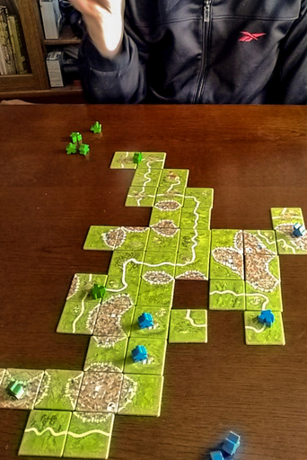

カルカソンヌ・ワールド・トーナメントやカルカソンヌ日本選手権には、将棋や囲碁のように制限時間があり、1 人あたりの制限時間は 15 分です。時間の計測にはチェスロックを使います。NHK で毎週放送されている囲碁や将棋のような秒読みということが行われず、時間切れは即負けになるので (いわゆる切れ負け)、持ち時間をいかに有効に使うかということに関してはかなりシビアにならざるを得ません。
競技として対局しない我々一般プレイヤーには縁遠い話ではあるのですが、この持ち時間についてカルカソンヌ・ワールド・トーナメント・ルールやカルカソンヌ日本選手権公式ルールを読んでいて気になることがあります。
我々のように楽しみのためにプレイする人間にとってはまったく問題にならないのですが、競技として対局する場合だと、どのタイミングで山からタイルを引くことが許されるのかが競技に大きく影響を及ぼすはずなのですね。なのですがルールに定めがありません。
これの何が問題なのかと言うと、相手の手番で相手が自分の持ち時間を消費して次の手を考えているときに、その対戦者があらかじめ自分のタイルを引いてそれを見て、相手の持ち時間内で自分の次の手を考えるのを許すか許さないか、ということが曖昧なのですね。
このことに気がついたのはたまたた全日本選手権の準決勝の動画を見ていたときです。
どちらの選手も相手が対局時計を切り替える前、つまり相手の手番中にに自分のタイルをめくって確認してるのですね。つまり相手の対局時間を利用して自分自身の次の手を考えている。
正直これは OK なの？と思いました。
将棋や囲碁のように自分の手札から何から何までがオープンなゲームならそれでもいいと思います。でもカルカソンヌのように山札がふせられていて次のタイルに何が来るのかわからないはずのゲームでそれを良しとするのでよいのでしょうか？いや、現状良しとされてるからしてるんでしょうけど、ルールに記載がないのですね。
こういう対局に影響が著しくあるプレイ方法に対する取り決めが公式ルールにないのってどうなんでしょう。ルールが雑すぎるという意味で、競技としての信頼性はあまりないと思うのですが。
自分は競技としてのカルカソンヌは素人なので、動画を見て選手たちが時間泥棒のズルを前提にしてるという印象を正直持ってしまいました。もしこうしなければプレイ時間が足りないというのなら 15 分という持ち時間を伸ばすべきではないでしょうか。
相手の手番中にタイルをめくってそれを見ていいのなら、それはきちんとルールに明記すべきだと思うのですがどうでしょうか。個人的には相手の手番中に自分の次のタイルをめくって見てもかまわないとなったら、将棋や囲碁の世界に慣れ親しんでいる自分としては、なんのための 15 分の定めなん？となんだか気持ちがモニョリますけど。